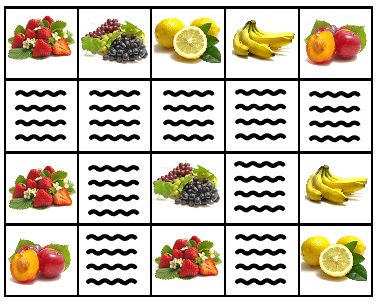

Nam has a rectangle farm. He divides the farm into small land plots that form a table with n rows and m columns. In each plots, he can grow fruits or vegetables. He also reserves some plots to dig a canal so that he can supply water for the farm. All plots of the canal is connected so that water can flow from one plot to other plots (two plots are adjacent if they share the same edge, not the same corner).
After a year, Nam decides to transform k plots of the canal into lands again so that he can grow more fruits and vegetables. But the remain narrower canal must also still be connected. Please help Nam to choose these k plots.
Input
Input starts with the number of tests - T (1 ≤ T ≤ 100). Then T tests follow with format:
• The first line contains n, m, k (1 ≤ n, m, k ≤ 1000).
• In the next n line, each line contains m number (0 or 1) display the table of plots. 0 means land and 1 means canal.
• Rows index from 1 to n from top to down, columns index from 1 to m from left to right.
• It guarantees that all 1s are connected and k is strictly less than the count of 1s.
Output
For each test in the input, print k line. Each line contain two numbers, the row index and the column index of the canal plot that will be transformed into land. The two numbers are separated by a space. If there are multiple answers, print any of them.